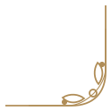
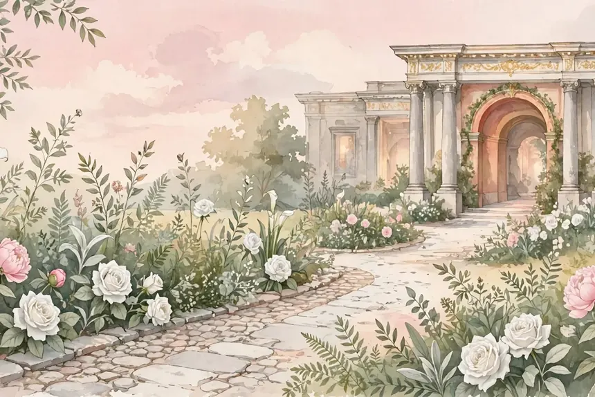

Assalamu'alaikum Warahmatullahi Wabarakatuh
Salam & Sapaan
–Hari
–Jam
–Menit
–Detik
Hari Bahagia Telah Tiba ✦ Terima kasih atas doa restu Anda.
Dua Hati, Satu Taman
Mempelai
Perjalanan Kami
Love Story
Save the Date
Jadwal Acara
—
Tempat Berlangsung
Lokasi

Momen di Taman
Galeri
Galeri berisi ilustrasi suasana tema (demo) — ganti dengan foto pasangan di file config.
Konfirmasi & Doa
RSVP & Buku Tamu
Belum ada ucapan. Jadilah yang pertama memberi doa ✦
— MODE DEMO: RSVP & ucapan tersimpan hanya di perangkat Anda (localStorage), belum terkirim ke server —
Tanda Kasih
Amplop Digital
— DATA REKENING DI ATAS ADALAH CONTOH (DEMO) — bukan rekening asli —
Terima Kasih
Penutup
&
UndangYa! · Palace Garden Gate